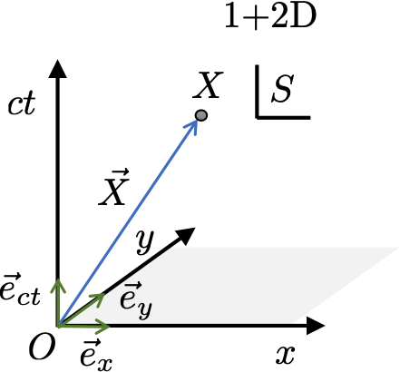
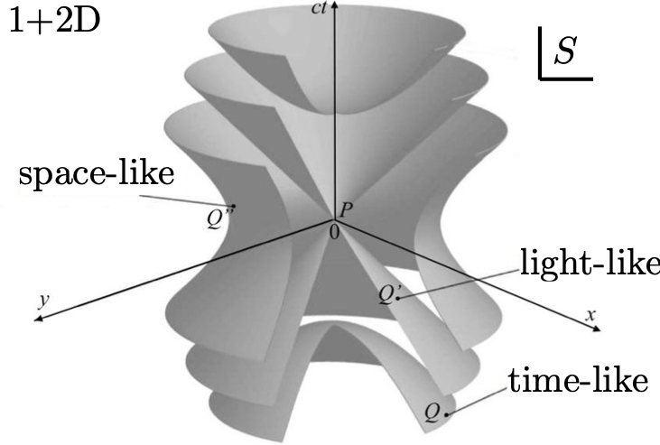
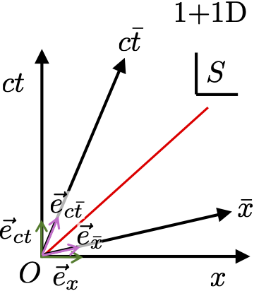

4 Introducing 4-vectors
\[ \require{physics} \newcommand{\bs}{\boldsymbol} \]
In this lecture we will explore more formally the key mathematical quantity of special relativity, the 4-vector.
4.1 Moving to 1+3D
Over the past 3 lectures we have focused on 1+1D space-time and enjoyed the convenience this provides for drawing diagrams. We have derived the Lorentz boost connecting reference frames moving a speed \(v\) relative to each other. However, in 1+1D there is quite a limited amount of transformations available to us, essentially boosting along and spatially reflecting about the \(x\)-axis. As we shall see, in 1+2D and 1+3D space-time the possibility of spatial rotations arises.

In 1+3D events or points in space-time, like \(X\), possess coordinates \(ct,x,y\) and \(z\) in some reference frame \(S\) relative to that frame’s origin \(O\). Geometrically a line (or arrow) from the point \(O\) to point \(X\) constructs a vector \(\vec{X}\). In the context of space-time and special relativity we will call \(\vec{X}\) a 4-vector, while a standard vector in 3D space will be called a 3-vector. The length of \(\vec{X}\), denoted \(||\vec{X}||\) is the distance between the space-time points \(O\) and \(X\) defining it, which is the interval: \[ ||\vec{X}||^2 = \Delta S^2(O,X) = (ct)^2 - x^2 - y^2 - z^2. \tag{4.1}\] Notice that this means we can have both positive and negative squared length vectors in space-time. As such we will call any 4-vector obeying \(||\vec{X}||^2 = \pm 1\) a unit 4-vector.
Our frame of reference \(S\) provides four basis unit 4-vectors \(\vec{e}_{ct},\vec{e}_x,\vec{e}_y\) and \(\vec{e}_z\) constructed by connecting \(O\) with points at the unit ticks along each corresponding axis. Note that \(||\vec{e}_{ct}||^2 = 1\) while \(||\vec{e}_{x}||^2 = ||\vec{e}_{y}||^2 = ||\vec{e}_{z}||^2 = -1\). The flip side of this construction is that we can define our frame \(S\) by these 4-vectors because they are all abstract geometrical objects in space-time.
Armed with basis 4-vectors in \(S\) any 4-vector like \(\vec{X}\) is expanded as: \[ \vec{X} = ct\,\vec{e}_{ct} + x\,\vec{e}_x + y\,\vec{e}_y + z\,\vec{e}_z, \tag{4.2}\] where the expansion coefficients are just the coordinates of the point \(X\) where the vector ends, as expected since it starts at \(O\). We can arrange these expansion coefficients of \(\vec{X}\) in the basis of \(S\) into a column vector as: \[ {\underline X} = \left( \begin{array}{c} ct \\ x \\ y \\ z \end{array}\right) = \left( \begin{array}{c} ct \\ {\underline r} \end{array}\right), \] Notice that we have introduced a new symbol \(\underline X\) for this column vector, and also used \({\underline r} = (x,y,z)^{\rm T}\) which is the conventional position column vector in 3D space. This is because \(\underline X\) is a concrete representation of the geometrical 4-vector \(\vec{X}\) in a particular frame \(S\). The distinction is highlighted by obtaining another representation of \(\vec{X}\) in frame \(\bar{S}\) via a Lorentz transformation as \[\left( \begin{array}{c} c\bar{t} \\ \bar{x} \\ \bar{y} \\ \bar{z} \end{array}\right) = \underline{\underline \Lambda}\left( \begin{array}{c} ct \\ x \\ y \\ z \end{array}\right). \] or more compactly \[ \underline{\bar{X}} = \underline{\underline \Lambda}\,{\underline X}, \] where \(\underline{\underline \Lambda}\) is a \(4 \times 4\) matrix describing the Lorentz transformation. As a result we have two different column vectors \(\underline X\) and \(\underline{\bar{X}}\) representing the same geometrical 4-vector \(\vec{X}\).
4.2 Minkowski metric
In 3D Euclidean space we can compute the length squared of any 3-vector \(\vec{r}\) using a quadratic form involving its column vector representation \(\underline r\) in some coordinate system as: \[ ||\vec{r}||^2 = {\underline r}^{\rm T}{\underline r} = x^2 + y^2 + z^2. \] In Minkowski 1+3D space-time the equivalent expression for a 4-vector \(\vec{X}\) in frame \(S\) is: \[ ||\vec{X}||^2 = {\underline X}^{\rm T}\,\underline{\underline \eta}\,{\underline X} = (ct)^2 - x^2 - y^2 - z^2, \] where we now have to sandwich a \(4\times 4\) diagonal matrix \[ \underline{\underline \eta} = \left(\begin{array}{cccc} 1 & 0 & 0 & 0 \\ 0 & -1 & 0 & 0 \\ 0 & 0 & -1 & 0 \\ 0 & 0 & 0 & -1 \end{array}\right) = {\rm diag}(1,-1,-1,-1), \tag{4.3}\] in the middle of the form. The matrix \(\underline{\underline{\eta}}\) is called the Minkowski metric.
An important class of transformation in 3D Euclidean space which connect different coordinates systems are rotations given in general by \(3\times 3\) matrix \(\underline{\underline R}\). For example, a rotation about the \(x\) axis by an angle \(\theta\) is: \[ \underline{\underline{R_x}}(\theta) = \left(\begin{array}{cccc} 1 & 0 & 0 \\ 0 & \cos(\theta) & \sin(\theta) \\ 0 & -\sin(\theta) & \cos(\theta) \end{array}\right). \] So if \(\vec{r}\) has a representation \(\underline r\) in one coorindate system is has a representation \[ \underline{\bar{r}} = \underline{\underline R} \, {\underline r}, \] in another that is rotated with respect to it. Yet changing the coordinate system should not alter the length we compute of the geometrical vector \(\vec{r}\) so \[ ||\vec{r}||^2 = \underline{\bar r}^{\rm T}\underline{\bar r} = {\underline r}^{\rm T}\underline{\underline R}^T\underline{\underline R}\,{\underline r} = {\underline r}^{\rm T}{\underline r}. \] The last equality can only be true for all \(\vec{r}\) if \(\underline{\underline R}^T\underline{\underline R} = \mathbb{1}\), where \(\mathbb{1}\) is the \(3\times 3\) identity matrix, which in this context is the Euclidean metric. This constraint tell us that rotation matrices \(\underline{\underline{R}}\) are orthogonal.
Lorentz transformations are \(4\times 4\) matrices \(\underline{\underline \Lambda}\) in 1+3D space-time defined similarly as transformations which preserve the length of 4-vectors. We know that the value of the space-time interval \(\Delta S^2(O,X)\) is invariant and agreed upon by all inertial observers. However, we also know in frame \(\bar S\) that \(\Delta S^2(O,X)\) is given by the exactly same mathematical form \((c\,{\rm time})^2 - {\rm space}^2\) as in Equation 4.1 so: \[ ||\vec{X}||^2 = \Delta S^2(O,X) = \underline{\bar{X}}^{\rm T}\,\underline{\underline \eta}\,\underline{\bar{X}} = (c\bar{t})^2 - {\bar x}^2 - {\bar y}^2 - {\bar z}^2, \] Consequently, the same metric \(\underline{\underline \eta}\) given in Equation 4.3 applies to every inertial frame. The invariance of the length gives us an important constraint on Lorentz transformations \(\underline{\underline \Lambda}\) as: \[ ||\vec{X}||^2 = \underline{\bar{X}}^{\rm T}\,\underline{\underline \eta}\,\underline{\bar{X}} = {\underline X}^{\rm T}\,\underline{\underline \Lambda}^T\,\underline{\underline \eta}\,\underline{\underline \Lambda}\,{\underline X} = {\underline X}^{\rm T}\,\underline{\underline \eta}\,{\underline X}. \] The last equality can only be true for all \(\vec{X}\) if Lorentz transformations obey \(\underline{\underline \Lambda}^T\,\underline{\underline \eta}\,\underline{\underline \Lambda} = \underline{\underline \eta}\). Our previous constraint on the orthogonality of rotations in 3D has the same form of a conjugation of the metric \(\underline{\underline R}^T\,\mathbb{1}\,\underline{\underline R} = \mathbb{1}\).
4.3 Lorentz transformations in 1+3D
Let’s consider some special cases of Lorentz transformations. The simplest is a spatial rotation \[ \underline{\underline{\Lambda_R}} = \left(\begin{array}{cccc} 1 & 0 & 0 & 0 \\ 0 & - & - & - \\ 0 & - & \underline{\underline R} & - \\ 0 & - & - & - \end{array}\right), \] which does nothing to time but rotates in space. In this case preservation of Euclidean distances in space alone ensures the space-time interval is also preserved since: \[ \begin{align} ||\vec{X}||^2 &= \underline{\bar{X}}^{\rm T}\,\underline{\underline \eta}\,\underline{\bar{X}}, \\ & = (ct)^2 - {\underline r}^{\rm T}\underline{\underline R}^T\underline{\underline R}\,{\underline r}, \\ & = (ct)^2 - {\underline r}^{\rm T}{\underline r}, \\ & = {\underline X}^{\rm T}\,\underline{\underline \eta}\,{\underline X}, \end{align} \] In the first two lectures we derived a Lorentz boost in 1+1D space-time. The boost by \(\beta\) along the \(x\)-axis in 1+3D is then: \[ \underline{\underline \Lambda}(\beta\vec{e}_x) = \left(\begin{array}{cccc} \gamma(\beta) & -\beta\gamma(\beta) & 0 & 0 \\ -\beta\gamma(\beta) & \gamma(\beta) & 0 & 0 \\ 0 & 0 & 1 & 0 \\ 0 & 0 & 0 & 1 \end{array}\right), \] given by inserting the \(2 \times 2\) matrix from earlier into the \(ct,x\) rows and columns in the top corner. As we saw in the previous lecture on Minkowski space-time isosurfaces of the space-time interval \(\Delta S^2\) have a hyperbolic structure. As a result we can write this boost as a hyperbolic rotation: \[ \underline{\underline \Lambda}(\beta\vec{e}_x) = \left(\begin{array}{cccc} \cosh(\zeta) & -\sinh(\zeta) & 0 & 0 \\ -\sinh(\zeta) & \cosh(\zeta) & 0 & 0 \\ 0 & 0 & 1 & 0 \\ 0 & 0 & 0 & 1 \end{array}\right), \] where \(\zeta = \tanh^{-1}(\beta)\) is the rapidity. We can write any Lorentz transformation in 1+3D as a sequence of spatial rotations and boosts along coordinates axes. In particular a boost by \(\beta\) along a spatial direction defined by any unit 3-vector \(\vec{n}\) can be decomposed as: \[ \underline{\underline \Lambda}(\beta\vec{n}) = \underline{\underline{\Lambda_R}}\,\underline{\underline \Lambda}(\beta\vec{e}_x) \underline{\underline{\Lambda_R}}^{-1}, \] where \(\underline{\underline R}^{-1}\) rotates \(\vec{n}\) into \(\vec{e}_x\), a boost is applied along the \(x\)-axis, and then \(\underline{\underline R}\) rotates \(\vec{e}_x\) back to \(\vec{n}\).

While rotations in 3D form a Lie group SO(3), Lorentz boosts on their own in 1+3D do not form a group. This is because if two non-colinear boosts are performed the result is not a pure boost. Instead you get a boost and a rotation, the latter being called a Wigner rotation. General Lorentz transforms, so boosts and rotations together, do form a Lie group SO\(^+\)(1,3).
4.4 Index notation
Up to now we have used standard matrix-vector formalism to try to compactly handle coordinate transformations. This approach will continue to pop up from time to time in this course, but mostly we will exploit an alternative formalism based on indices. To begin we introduce indices denoted by latin symbols such as \(\mu,\nu,\alpha,\tau,\dots\) which take the four values \(0 \equiv ct, 1 \equiv x, 2 \equiv y, 3 \equiv z\) over the space-time dimensions. The components of a 4-vector \(\vec{X}\) in frame \(S\) are contained in the column vector \(\underline X\) and we will denote the \(\mu\) element of \([{\underline X}]_\mu\) as \(x^\mu\). Note, the \(\mu\) is an upper index and should not be confused with an exponent! More explicitly we have: \[ {\underline X} = \left( \begin{array}{c} ct \\ x \\ y \\ z \end{array}\right) = \left( \begin{array}{c} x^0 \\ x^1 \\ x^2 \\ x^3 \end{array}\right), \] The expansion of the 4-vector \(\vec{X}\) in the basis of \(S\) in Equation 4.2 is then: \[ \vec{X} = x^0\,\vec{e}_{ct} + x^1\,\vec{e}_x + x^2\,\vec{e}_y + x^3\,\vec{e}_z. \] We can also replace the labels on basis vectors with the same index \(\mu\) giving: \[ \vec{X} = \sum_{\mu=0}^3 x^\mu\,\vec{e}_{\mu}. \tag{4.4}\] Next, we can adopt Einstein convention and assume whenever there is a repeated upper and lower index we mean a summation like in Equation 4.4 is to be performed. This leaves: \[ \vec{X} = x^\mu\,\vec{e}_{\mu}. \tag{4.5}\] The repeated upper and lower \(\mu\) index is called a contraction. Since the index \(\mu\) is summed over it is a “dummy” index and we are completely free to relabel it to any other latin symbol so \[ \vec{X} = x^\alpha\,\vec{e}_{\alpha}, \] also holds. This convention will prove to be very useful for keeping potentially cumbersome expressions compact.
Perhaps an even more compelling reason to adopt the index formalism is that it signifies more clearly a change in frame. In matrix-vector formalism we have \[ \underline{\bar{X}} = \underline{\underline \Lambda}\,{\underline X}, \] which in terms of elements is: \[ [\underline{\bar{X}}]_\mu = \sum_{\nu=0}^3[\underline{\underline \Lambda}]_{\mu\nu}[{\underline X}]_\nu. \] In index notation this expression becomes: \[ x^{\bar{\mu}} = \Lambda^{\bar{\mu}}_\nu x^\nu, \tag{4.6}\] where \(x^{\bar{\mu}} = [\underline{\bar{X}}]_\bar{\mu}\), \(x^\nu = [{\underline X}]_\nu\) and \(\Lambda^{\bar{\mu}}_\nu = [\underline{\underline \Lambda}]_{\bar{\mu}\nu}\). Quite a few comments are in order about Equation 4.6. For elements of matrices and vectors we conventionally write only lower indices to avoid confusion with exponents and because in linear algebra there is no need to have distinct upper and lower type indices. We have chosen to give the components of 4-vectors \(x^\mu\) an upper index, so in Equation 4.6 consistency with the Einstein convention then requires us to use both upper and lower indices on \(\Lambda\). A useful new bit of notation in Equation 4.6 is that we have placed a bar above the index \(\bar{\mu}\) to denote that the components being indexed over are for frame \(\bar S\). We can take Equation 4.6 as fundamental and arrive at the following:
Given Equation 4.6 expresses how components in \(\bar S\) are constructed from those in \(S\) it is natural to ask how to invert this expansion. In matrix-vector notation we want: \[ {\underline X} = \underline{\underline \Lambda}^{-1}\,\underline{\bar{X}}, \] The equivalent index expansion for this equation is \[ x^{\alpha} = \Lambda^{\alpha}_{\bar \beta} x^{\bar \beta}. \] where we have used \(\Lambda^{\alpha}_{\bar \beta} = [\underline{\underline \Lambda}^{-1}]_{\alpha\bar{\beta}}\). We don’t need to distinguish the inverse transformation with a \(\circ^{-1}\). Instead we treat \(S\) and \(\bar S\) on an equal footing since we can now unambiguously identify what the Lorentz transformation does by examining its indices. Specifically, the upper index is the destination frame and lower index is the originating frame for transformations of 4-vectors. Hence:
Transform from \(S \rightarrow \bar S\) is \(\Lambda^{\bar{\mu}}_\nu\).
Transform from \({\bar S} \rightarrow S\) is \(\Lambda^{\nu}_{\bar \mu}\).
In matrix-vector notation the transformation from \({\bar S} \rightarrow S \rightarrow {\bar S}\) is given by: \[ \begin{align} \underline{\underline \Lambda}\,\underline{\underline \Lambda}^{-1} &= \mathbb{1}, \\ [\underline{\underline \Lambda}\,\underline{\underline \Lambda}^{-1}]_{\bar{\alpha}\bar{\beta}} &= [\mathbb{1}]_{\bar{\alpha}\bar{\beta}} = \delta_{\bar{\alpha}\bar{\beta}}, \end{align} \] where \(\mathbb{1}\) is the \(4\times 4\) identity matrix here and \(\delta_{\bar{\alpha}\bar{\beta}}\) is the Kronecker delta symbol which is 1 if \(\bar{\alpha}=\bar{\beta}\) and zero otherwise. Since we start and end at \(\bar S\) indices are all barred and the net effect is the identity, i.e. no change. This converts to an index expression as: \[ \begin{align} \sum_{\mu=0}^3[\underline{\underline \Lambda}]_{{\bar \alpha}\mu}[\underline{\underline \Lambda}^{-1}]_{\mu\bar{\beta}} &= \delta_{\bar{\alpha}\bar{\beta}}, \\ &~{\boldsymbol \downarrow}\\ \Lambda^{\bar \alpha}_\mu \Lambda^\mu_{\bar \beta} &= \delta^\bar{\alpha}_\bar{\beta}, \end{align} \tag{4.7}\] The opposite transformation from \(S \rightarrow {\bar S} \rightarrow S\) is given by: \[ \begin{align} \underline{\underline \Lambda}^{-1}\underline{\underline \Lambda} &= \mathbb{1}, \\ [\underline{\underline \Lambda}^{-1}\underline{\underline \Lambda}]_{\alpha\beta} & = \delta_{\alpha\beta}. \end{align} \] which converts to the index expression: \[ \Lambda^\mu_{\bar \beta}\Lambda^{\bar \beta}_\nu = \delta^\mu_\nu. \tag{4.8}\] It is already evident here that the matrix notation is somewhat clunky and potentially confusing which is the reason we will, for the most part, use index notation instead.
4.5 Transformation of basis 4-vectors
The fundamental reason we need upper and lower indices is that they actually denote different geometrical objects. The full implications of this will become clearer over the next few lectures. For now we can see why this is necessary by considering how basis 4-vectors \(\vec{e}_\mu\) transform between frames. Earlier we gave these objects lower indices which made the expansion in Equation 4.5 consistent with Einstein notation. However, the reason is deeper than this. Take the 4-vector \(\vec{X}\). As a geometrical object it has different expansions in every frame so: \[ \vec{X} = x^\mu\vec{e}_\mu = x^{\bar\mu}\vec{e}_{\bar\mu}. \] If we insert the transformation Equation 4.6 then the following rearrangements and index relabelling gives: \[ \begin{align} x^\mu\vec{e}_\mu &= x^{\bar\alpha}\vec{e}_{\bar\alpha}, \\ &= \Lambda^{\bar\alpha}_\nu x^\nu \vec{e}_{\bar\alpha}, \\ &= \Lambda^{\bar\nu}_\mu x^\mu \vec{e}_{\bar\nu}, \\ x^\mu(\vec{e}_\mu - \Lambda^{\bar\nu}_\mu \vec{e}_{\bar\nu}) &= 0. \end{align} \] For the last line to be true for all 4-vectors \(\vec{X}\) it must be that the basis 4-vectors transform as \[ \vec{e}_\mu = \Lambda^{\bar\nu}_\mu\vec{e}_{\bar\nu}. \tag{4.9}\] If you read this equation carefully you will notice it is backwards compared to Equation 4.6 since it constructs quantities in \(S\) in terms of those in \(\bar S\). We use Equation 4.7 to invert the expression as: \[ \begin{align} \vec{e}_\mu &= \Lambda^{\bar\alpha}_\mu\vec{e}_{\bar\alpha}, \\ \Lambda^\mu_{\bar \nu}\vec{e}_\mu &= \Lambda^\mu_{\bar \nu}\Lambda^{\bar\alpha}_\mu\vec{e}_{\bar\alpha}, \\ \Lambda^\mu_{\bar \nu}\vec{e}_\mu &= \delta^{\bar \alpha}_{\bar\nu}\vec{e}_{\bar\alpha}, \\ \Lambda^\mu_{\bar \nu}\vec{e}_\mu &= \vec{e}_{\bar\nu}, \end{align} \] Consequently, basis 4-vectors in \(\bar S\) are given by \[ \vec{e}_{\bar\nu} = \Lambda^\mu_{\bar \nu}\vec{e}_\mu \tag{4.10}\] where the inversion compared to the expression for the components \[ x^{\bar \mu} = \Lambda^{\bar \mu}_\nu x^\nu, \tag{4.11}\] is clear. What does this mean? Having an upper index, like components of a 4-vector, transforms from \(S\) to \(\bar S\) with a standard Lorentz transformation as we derived for space-time coordinates. However, having a lower index means those objects transform from \(S\) to \(\bar S\) via the inverse of the standard Lorentz transformation. As we shall see later such objects whose components transform this way are different to 4-vectors and deserving of a different name called one-forms.

To finish you are invited below to confirm a sensible property of these transformations - take the expansion of a 4-vector \(\vec{X}\) in the basis of \(\bar S\) and recover the expansion in \(S\).